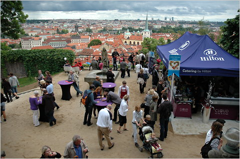
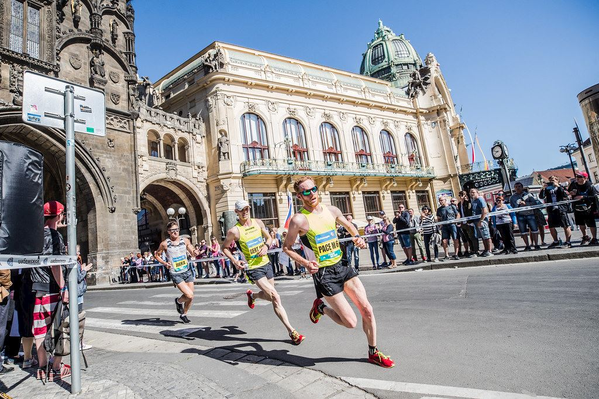
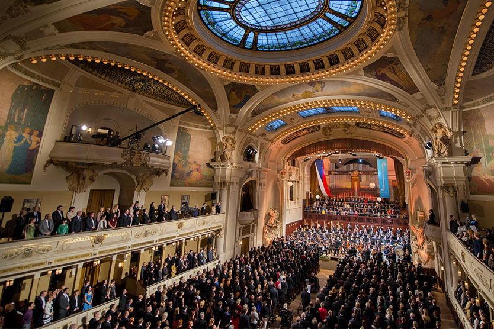
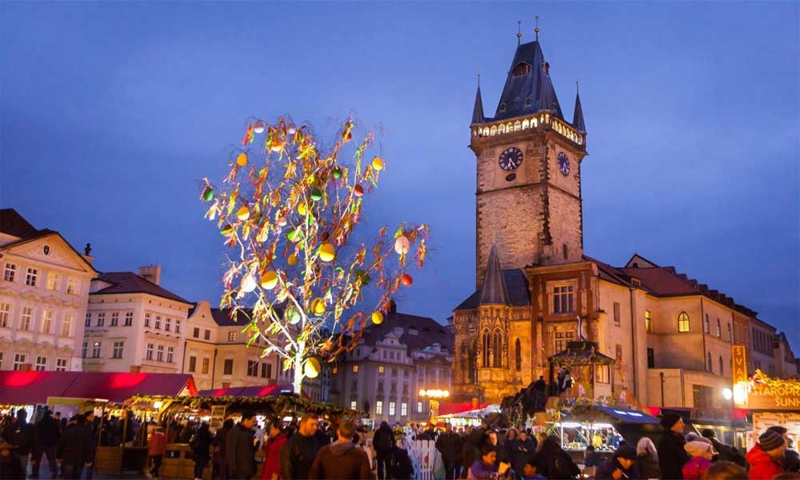
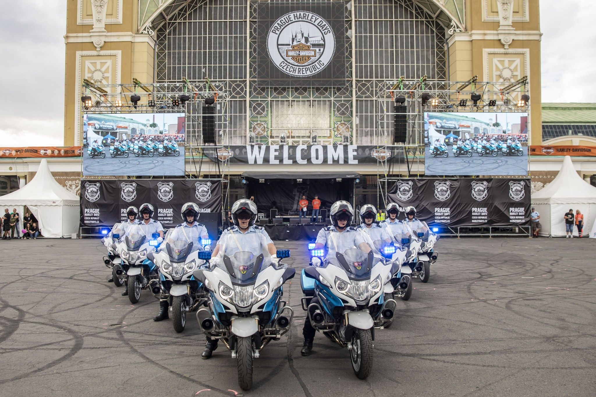
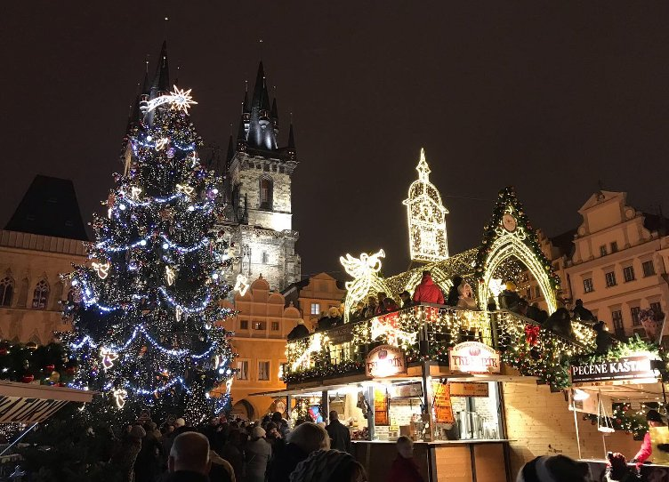

<!DOCTYPE html>
<html lang="en">
<head>
    <meta charset="UTF-8">
    <meta http-equiv="X-UA-Compatible" content="IE=edge">
    <meta name="viewport" content="width=device-width, initial-scale=1.0">
    <title>Events</title>
    <link rel="shortcut icon" type="image/png" href="images/LOGO_PRAGUE.png">
    <link rel="stylesheet" href="events.css">
    
</head>
</html>
<body>
    <header>

    </header>
    <main>
    <div class="icon-bar">
        <a href="index.html">HOME</a>
        <a href="About.html">ABOUT</a>
        <a href="Lifestyle.html">LIFESTYLE</a>
        <a class="active" href="Events.html">EVENTS</a>
        <a href="Contact.html">CONTACT</a>
        
    </div>
    <div class="events">
        <h1>Prague Events</h1>
        <p>To find every one of the marvels of the city of Prague you would presumably require a lifetime, anyway here we will attempt to list every one of the spots of interest we trust you should check whether you ended up having sufficient opportunity. Extensions, squares, houses of worship, renowned roads, religious communities, exhibitions, galleries and numerous others!</p>
      </div>
      
      <div class="row">
        <div class="column">
          <div class="card">
            
            <div class="container">
              <h2>Prague Food Festival</h2>
              <p>Prague Food Festival amasses quite a bit of it in one spot and throughout the long term it has become a never-ending grandstand of numerous rarities that has developed massively since its beginning. For food darlings in Prague, the yearly Prague Food Festival is the most appealing occasion of the year. 

                Held six years straight up until this point, the three-day occasion, which as a rule runs in May unites the top gourmet specialists and cafés from the nation over, as chosen by Pavel Maurer, the author of the celebration and the distributer of the yearly Grand Restaurant Guide, which evaluated the nation's main 100 eateries. He likewise as of late dispatched the Grand Bar Guide, rating bars and bistros, too. The celebration is normally held in one of Prague's milestone territories, the 6th Prague Food Festival occurred in the fantasy like Royal Gardens of Prague Castle. 
                
                Each May, the Prague Food Festival expansions in both size and degree and it additionally combines the country's culinary features with the most staggering perspectives allowing its guests the opportunity to appreciate the perspective on this delightful city while getting a charge out of the degustation menus of in excess of 50 café from Prague and past, just for a truly sensible cost.</p>
              
            </div>
          </div>
        </div>
      
        <div class="column">
          <div class="card">
            
            <div class="container">
              <h2>Prague Marathon</h2>
              <p>The Prague Marathon (otherwise called Prague International Marathon (PIM) and Volkswagen Prague Marathon) is held in Prague each May. It started in 1995 and has acquire global praise from that point forward, being granted IAAF Gold Label status. In June 1995 there were 958 sprinters flooding the roads of Prague and the number developed to 4,000 ten years after the fact, also another 10,000 individuals who participated in different runs as of now too. 

                As per media it is the world's most global long distance race which every year draws in sprinters coming from 55 distinct nations. Besides, Prague's long distance race course is the seventh quickest and has been casted a ballot perhaps the most outwardly dazzling on the planet. This occasion happens over an entire end of the week and contains a few occasions, like the Hervis Prague Half Marathon, which was presented four years after the Prague International Marathon and is held each March or April. 
                
                Different occasions incorporate the Volkswagen Family Minimarathon 4.2 km, the Allianz Eco Walk 2 km, or the In-line party 6.5 km – a skating occasion. Since its commencement in 1995, the men's race has been overwhelmed by East African sprinters, with Kenyan competitors specifically. The ladies' race has been overwhelmed by Russian and Kenyan sprinters. 
                
                On the off chance that you believe you're adequately fit, join this high speed race and take in the take in the wonderful view while planning for the beginning on the Charles Bridge!</p>
        
            </div>
          </div>
        </div>

        <div class="column">
            <div class="card">
              
              <div class="container">
                <h2>Prague Spring</h2>
                <p>Worldwide Music Festival Prague Spring is a customary grandstand for extraordinary performing craftsmen, ensemble symphonies and chamber outfits. It is held yearly in Prague from twelfth May (the commemoration of the passing of Bedřich Smetana) to fourth June. Since its starting it has been a lofty grandstand of world music culture and its most recent patterns. 

                    The main version was held in 1946 under the protection of President Edvard Beneš at the event of 50th commemoration of the Czech Philharmonic Orchestra. The getting sorted out board of trustees was made ​​up of noticeable characters of Czech music. Since 1952 the celebration has consistently begun with a pattern of musical sonnets My Country by Bedřich Smetana and finishes up with the ninth orchestra - tribute to satisfaction by Ludwig van Beethoven. 
                    
                    At the Prague celebration stages excited applauses were gotten by Karel Ancerl, Leonard Bernstein, Sir Adrian Boult, John Eliot Gardiner, Rudolf Firkušný, Jaroslav Krombholc, Rafael Kubelík, Anne-Sophie Mutter, Nigel Kennedy and numerous others. 
                    
                    The celebration addresses both Czech and unfamiliar symphonies: the Berlin Philharmonic Orchestra, English Baroque Soloists, Czech Philharmonic Orchestra and that's only the tip of the iceberg. Notwithstanding traditional music there have been a few jazz shows is at the celebration as of late. In case you're visiting Prague at the hour of the celebration, make a point to go to in any event one of the shows which are held in the best show settings in Europe.</p>
            
              </div>
            </div>
          </div>

          <div class="column">
            <div class="card">
              
              <div class="container">
                <h2>Prague Easter Markets</h2>
                <p>The Prague Easter Markets are a fundamental piece of the spring Prague, which bring brilliant shaded carefully assembled merchandise, all way of food and inebriated and great old traditions to Prague awakening after the virus winter. The Easter business sectors run every day from sixteenth March to seventh April at the Old Town Square and Wenceslas Square. 

                    There are additionally more modest Easter business sectors at Náměstí Republiky and Náměstí Míru. The arranged lines of wooden cottages show a wide scope of carefully assembled items, like certified china, gems, scented candles, wooden toys, weaved fabric, and manikins and dolls. In any case, the most customary element of Czech Easter are the brilliantly shaded, hand-painted Easter eggs and the regular meshed whip produced using pussywhillow twigs. 
                    
                    The previous is called kraslice, which Czech women wearing customary outfit can customize for guests, by painting on a name or an exceptional message. The last is thought to carry wellbeing and youth to any individual who is whipped with them and has been utilized by young men who go caroling on Easter Monday and emblematically whip young ladies on the legs. Aside from shopping you ought to likewise test the conventional Czech food sources, like cakes, wieners and simmered ham. For youngsters there is a kids' lodge at the Old Town Square. 
                    
                    Inside, workshops are held where kids can appreciate the spring and Easter exercises: making Easter chicks, painting eggs and window boxes. There is likewise a yard pen, where children can stroke sheep, goats, hare and a donkey.</p>                    
            
              </div>
            </div>
          </div>
          <div class="column">
            <div class="card">
              
              <div class="container">
                <h2>Prague Harley Days</h2>
                <p>Appreciate the legitimate climate of Prague joined with the adrenalin and fervor of a Harley-Davidson rally! The pinnacle of the occasion is the Biker's Parade through the downtown area with an inconceivable scene of the Prague palace, the biggest palace complex on the planet and UNESCO world legacy site. The assembly is available to riders of all bike brands. 

                  The occasion incorporates remarkable bike piece where you'll have the option to see both collectible and present day models of Harley-Davidson from 1923 - 2018. As a component of the exhibition, there are bike extras and a video projection with the topic Harley-Davidson. You can appreciate in excess of 100 models of cruisers. It has a place with perhaps the greatest exhibition of Harley-Davidson in Europe. Guided voyages through the exhibition are additionally accessible for those intrigued!</p>
              </div>
            </div>
          </div>    
          <div class="column">
            <div class="card">
              
              <div class="container">
                <h2>Christmas Markets</h2>
                <p>Absorb the bubbly air and appreciate Christmas ditties, generous food and hot wine at the conventional Prague Christmas markets. The Prague Christmas markets are held each year and are open day by day (counting Christmas Day, Christmas Eve and New Year's Day) at the Old Town Square and Wenceslas Square. 

                    There are more modest ones at Náměstí Republiky, Havelský market and Náměstí Míru in the Vinohrady region. Conventional Christmas markets are a fundamental piece of Prague around Christmas, and indeed of the entire Czech Republic. No big surprise, as they mystically light up the city, uniting local people and traveler to share the occasion soul in a fantasy like setting. For the most part there are lines of brilliantly adorned wooden cabins selling conventional handmade items like china, fired mugs, weavings, wooden toys, scented candles, manikins and dolls, Christmas tree trimmings, and different caps, gloves and scarves. 
                    
                    These things are ideal to bring home, to embellish your home or to use as Christmas presents for your loved ones. In addition, the business sectors likewise offer a wide scope of customary food varieties that are being made right on the spot. You can and should test a portion of the nearby food and drink, like enormous broiled hams on spits or customary Czech cake 'Trdelník' – a hot, glossed over baked good, or frankfurters. Concerning the beverages, during Christmas shopping nothing will warm you up better compared to a cup of hot wine – svařené víno or svařák. At the Old Town Square there is a creature stable, where you and your children can stroke sheep, goats and a jackass. 
                    
                    To wrap things up, there is a huge Bethlehem scene. The huge Christmas tree, transported in from the Krkonoše mountains, overwhelms the market at the Old Town Square as it makes a genuinely shocking sight, set against the gothic design. Regarding the tunes, nearby groups and ensembles frequently perform on a phase at the Old Town Square. 
                    
                    In the event that you end up visiting Prague at the hour of Christmas, you ought not miss this great happy climate!</p>
                
              </div>
            </div>
          </div>
    </main>
</body>